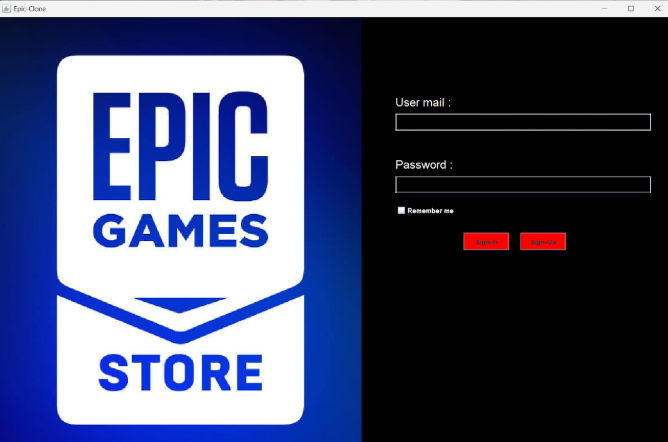
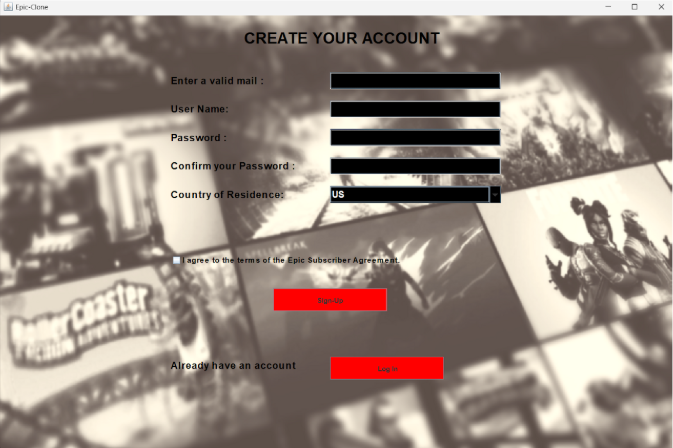
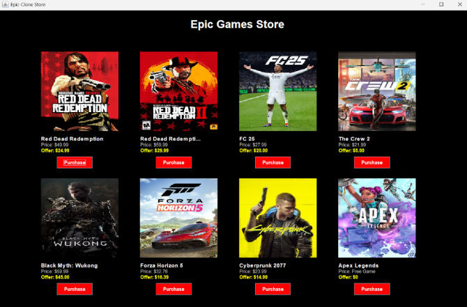
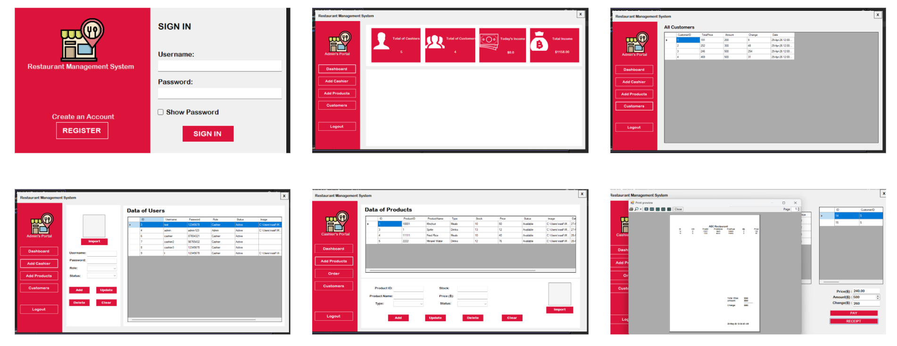
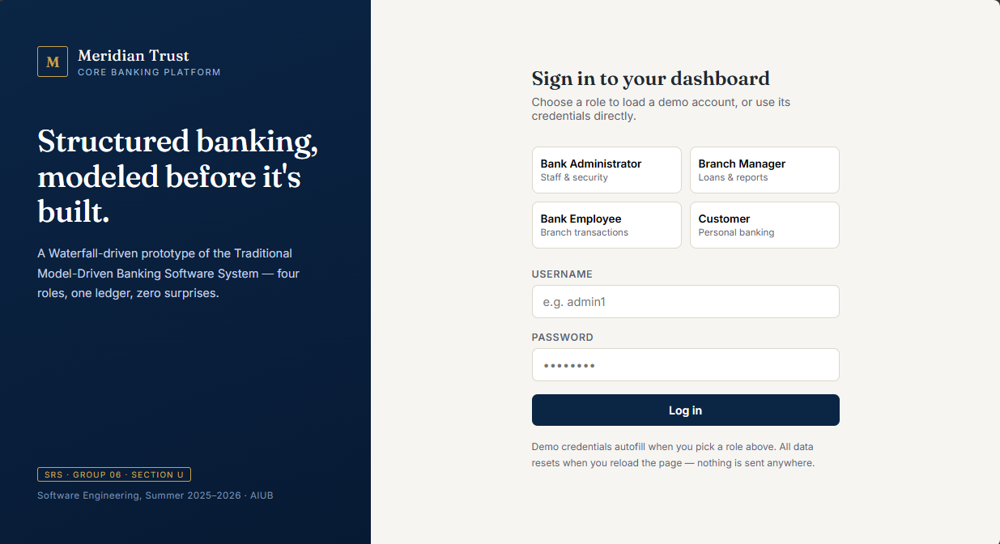
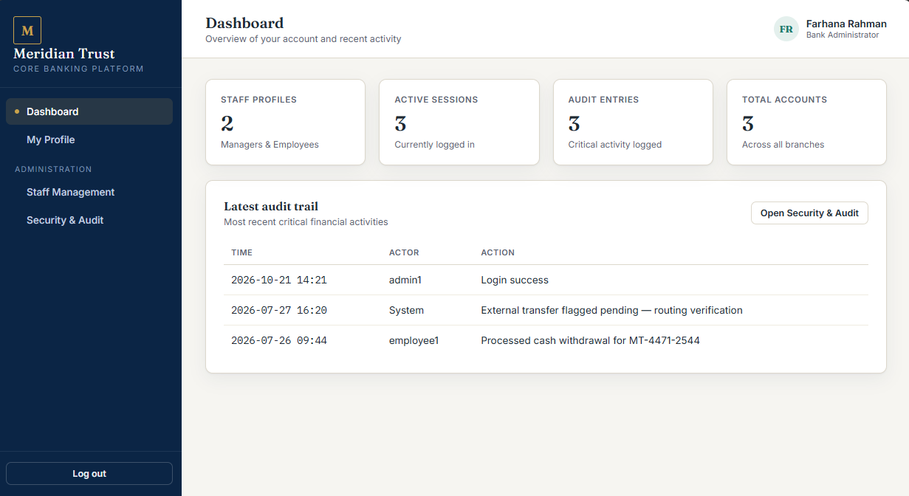
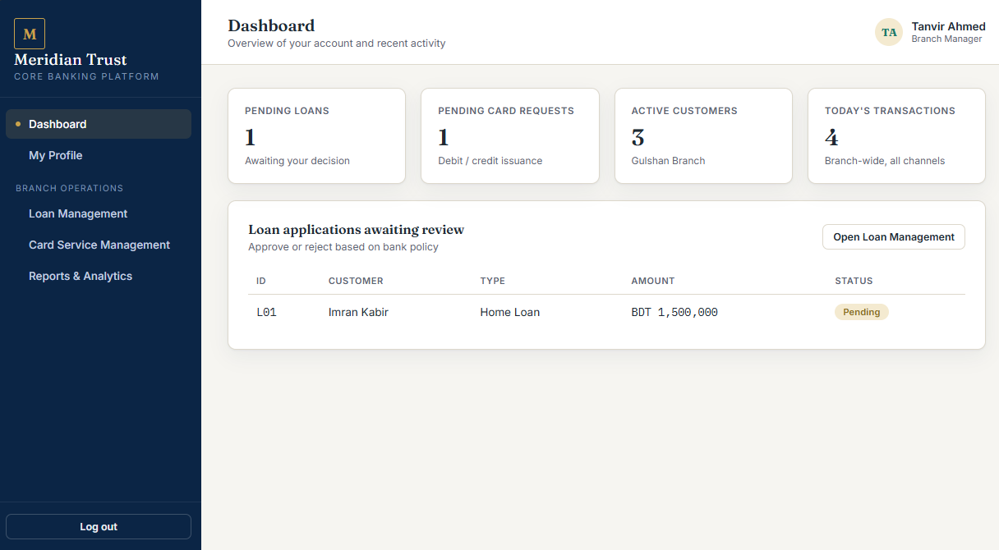
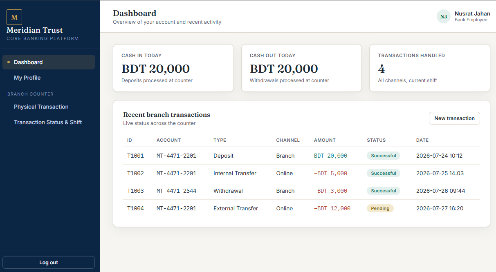
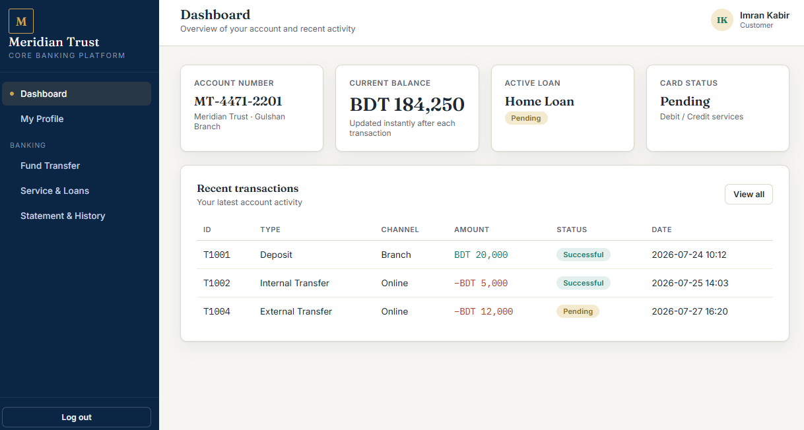

Project-1



Game Store using Java
A basic game store management system, where admin can add or remove any games and also update the price. Customer can buy games in various payment methods
Project-2

Restaurant Management System using C#
The Restaurant Management System is a Windows desktop application featuring a secure authentication interface with dedicated Admin and Cashier portals.
The administrative side allows users to monitor real-time business metrics, view customer records, and perform CRUD operations to manage cashier accounts and product inventories.
Meanwhile, the cashier side facilitates order processing, inventory selection, customer payment calculations, and printable receipt generation.
Project-3





Bank Management System
Meridian Trust is an interactive, Waterfall-driven prototype of a traditional model-driven banking software system developed for a Software Engineering course.
It features a comprehensive, in-memory core banking platform supporting role-based dashboards and workflows for Administrators, Branch Managers, Bank Employees, and Customers.
Users can simulate physical branch transactions, fund transfers, loan applications, account management, and security audit logging entirely within a single application shell.